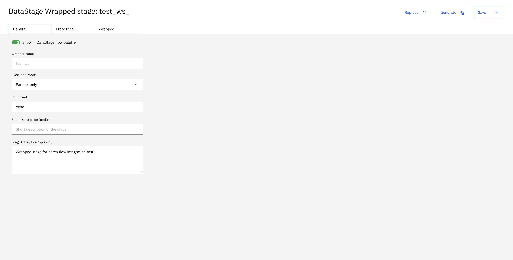

Wrapped Stages#
A wrapped stage is a reusable project asset that encapsulates an external executable command into a DataStage stage. Once created and configured, a wrapped stage appears in the batch flow editor just like any built-in stage, letting you invoke custom scripts or binaries as part of a flow.
Note
Wrapped stages are an on-premises feature and require the platform to be configured for an
on-premises deployment. Calling any wrapped stage method from a SaaS or AWS deployment
raises a RuntimeError.
Wrapped stage management follows a two-step process:
Define the asset — create and configure the
WrappedStageasset in the project (command, inputs, outputs, properties, environment variables, exit codes).Use it in a flow — add the asset to a
BatchFlowas a stage node usingBatchFlow.add_stage().
Creating a Wrapped Stage#
Use Project.create_wrapped_stage() to create a new wrapped stage asset in the project.
>>> wrapped_stage = project.create_wrapped_stage(
... name='My Custom Stage',
... description='Executes a custom post-processing script',
... )
Listing and Retrieving Wrapped Stages#
Access wrapped stages through the Project.wrapped_stages property,
which returns a WrappedStages collection.
>>> # List all wrapped stages
>>> project.wrapped_stages
[WrappedStage(...)]
>>> # Filter by name
>>> stages = project.wrapped_stages.get_all(name='My Custom Stage')
>>> # Get a single stage by name
>>> my_stage = project.wrapped_stages.get(name='My Custom Stage')
>>> # Get the total count
>>> len(project.wrapped_stages)
1
Configuring a Wrapped Stage#
A wrapped stage asset has several configurable properties. After modifying any of them, call
Project.update_wrapped_stage() to persist the changes.
Name and description
>>> wrapped_stage.command = '/opt/scripts/my_script.sh'
>>> wrapped_stage.description = 'Executes a custom post-processing script with configurable options'
>>> project.update_wrapped_stage(wrapped_stage)
<Response [200]>
Execution mode
The execution_mode property controls whether the stage runs
in parallel ('par') or sequential ('seq') mode. The default is 'par'.
>>> wrapped_stage.execution_mode = 'seq'
>>> project.update_wrapped_stage(wrapped_stage)
<Response [200]>
Adding Inputs and Outputs#
Use WrappedStage.add_input()
and WrappedStage.add_output()
to define the stage’s data interfaces.
The stream parameter determines how data is passed between DataStage and the executable:
Pass a
FileDescriptorenum value (STDIN,STDOUT, orSTDERR) for stream-based links, where data is piped directly through standard file descriptors.Pass a plain string for non-stream links, where the string is the name of the argument or variable used to pass the file path to the executable. Use the
is_command_lineparameter to specify how the name is passed:is_command_line=True(the default) — the name is passed as a command-line argument.is_command_line=False— the name is passed as an environment variable.
>>> from ibm_watsonx_data_integration.services.datastage.models.components.wrapped_stage import FileDescriptor
>>>
>>> # Stream-based: data piped via stdin
>>> wrapped_stage.add_input('input1', FileDescriptor.STDIN)
WrappedStage(...)
>>>
>>> # Stream-based: data piped via stdout
>>> wrapped_stage.add_output('output1', FileDescriptor.STDOUT)
WrappedStage(...)
>>>
>>> # Non-stream: file path passed as a command-line argument named OUTPUT_FILE
>>> wrapped_stage.add_output('output2', 'OUTPUT_FILE', is_command_line=True)
WrappedStage(...)
>>>
>>> # Non-stream: file path passed as an environment variable named INPUT_PATH
>>> wrapped_stage.add_input('input2', 'INPUT_PATH', named_pipe="my_pipe_name", is_command_line=False)
WrappedStage(...)
>>>
>>> project.update_wrapped_stage(wrapped_stage)
<Response [200]>
Note
is_command_line and named_pipe are only valid when stream is a plain string. Passing them
alongside a FileDescriptor
value raises a ValueError.
You can optionally attach a DataDefinition
to associate a schema with the link.
>>> data_def = project.data_definitions.get(name='data_definition_1')
>>> wrapped_stage.add_output('output_with_schema', FileDescriptor.STDOUT, data_definition=data_def)
WrappedStage(...)
>>> project.update_wrapped_stage(wrapped_stage)
<Response [200]>
Adding Properties#
Properties let users supply runtime configuration values to the wrapped stage.
Use WrappedStage.add_property() to add a property.
>>> from ibm_watsonx_data_integration.services.datastage.models.components.wrapped_stage import DataType
>>>
>>> wrapped_stage.add_property(
... name='output_path',
... data_type=DataType.PATHNAME,
... prompt='Output file path',
... default_value='/tmp/output',
... )
WrappedStage(...)
>>> wrapped_stage.add_property(
... name='record_count',
... data_type=DataType.INTEGER,
... prompt='Number of records to process',
... default_value='100',
... required=False,
... )
WrappedStage(...)
>>> wrapped_stage.add_property(
... name='mode',
... data_type=DataType.LIST,
... prompt='Processing mode',
... list_values=['fast', 'normal', 'safe'],
... )
WrappedStage(...)
>>> project.update_wrapped_stage(wrapped_stage)
<Response [200]>
Available DataType values:
DataType.STRINGDataType.INTEGERDataType.FLOATDataType.PATHNAMEDataType.LISTDataType.INPUTCOLUMNDataType.BOOLEAN
Note
When using DataType.LIST, the list_values parameter is required and must be a list of strings.
If no default_value is provided, the first item in list_values is used as the default.
Adding Environment Variables#
Use WrappedStage.add_environment_variable()
to declare environment variables that are set in the executable’s environment at runtime.
>>> wrapped_stage.add_environment_variable('LOG_LEVEL', 'INFO')
WrappedStage(...)
>>> wrapped_stage.add_environment_variable('TEMP_DIR', '/tmp')
WrappedStage(...)
>>> project.update_wrapped_stage(wrapped_stage)
<Response [200]>
Configuring Exit Codes#
You can add failure and success codes to the wrapped stage as well but you cannot add both at the same time. If all_exit_codes_successful is True (the default), use add_failure_code().
If it is False, use add_success_code().
Failure codes:
>>> wrapped_stage.add_failure_code('CODE_NAME_1')
WrappedStage(...)
>>> wrapped_stage.add_failure_code('255')
WrappedStage(...)
>>> project.update_wrapped_stage(wrapped_stage)
<Response [200]>
Success codes:
>>> wrapped_stage.entity.wrapped.environment.exit_codes.all_exit_codes_successful = False
>>> wrapped_stage.add_success_code('SUCCESS_CODE_1')
WrappedStage(...)
>>> project.update_wrapped_stage(wrapped_stage)
<Response [200]>
Generating a Wrapped Stage#
Before a wrapped stage can be used in a batch flow, it must be generated. Generation compiles the stage’s configuration into a usable DataStage stage type that the flow editor recognises. This is a separate step from saving — updating the asset persists the configuration, but generation is what makes the stage available for use in flows.
In the UI, these are two distinct buttons on the wrapped stage editor:
Save — persists changes to the asset (equivalent to
Project.update_wrapped_stage()).Generate — compiles the saved configuration into a usable stage type (equivalent to
Project.generate_wrapped_stage()).

In the SDK, call generate_wrapped_stage()
after saving your changes:
>>> project.update_wrapped_stage(wrapped_stage)
<Response [200]>
>>> project.generate_wrapped_stage(wrapped_stage)
<Response [204]>
Note
You must generate a wrapped stage at least once before adding it to a flow. Re-generate after any configuration changes so that the flow editor picks up the latest definition.
The UI provides a Replace button that swaps the current wrapped stage asset with a different one. This operation is not yet implemented in the SDK.
Using a Wrapped Stage in a Batch Flow#
Once a wrapped stage asset exists in the project, add it to any batch flow using
BatchFlow.add_stage()
with type='Wrapped Stage' and the wrapped_stage_name parameter set to the asset’s name.
>>> stage_node = batch_flow.add_stage(
... type='Wrapped Stage',
... wrapped_stage_name='My Custom Stage',
... )
>>> project.update_flow(batch_flow)
<Response [201]>
You can also supply a custom label for the stage node within the flow:
>>> stage_node = batch_flow.add_stage(
... type='Wrapped Stage',
... label='Pre-processing Step',
... wrapped_stage_name='My Custom Stage',
... )
>>> project.update_flow(batch_flow)
<Response [201]>
Duplicating a Wrapped Stage#
Use Project.duplicate_wrapped_stage()
to create a copy of an existing wrapped stage asset. If no name is provided, the copy is named "<original name> cloned".
>>> cloned = project.duplicate_wrapped_stage(wrapped_stage=wrapped_stage, name='My Custom Stage v2')
>>> cloned.name
'My Custom Stage v2'
Deleting a Wrapped Stage#
Use Project.delete_wrapped_stage()
to permanently remove a wrapped stage asset from the project.
>>> project.delete_wrapped_stage(cloned)
<Response [200]>